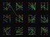

|  |
Intermittent |
Experiments with intermittent between-group communication. Generalizes BaliPlus in the bali repo.
Within-group communication is common, between-group communication is uncommon. With success-bias where success depends on group state: Each individual copies the most successful of all those who talk to it on a given timestep. Neighbors (gray lines) always talk to each other. Others talk to each other, randomly, as well.